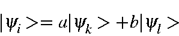
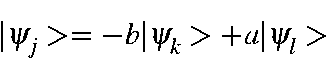
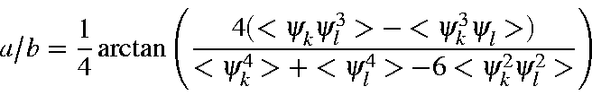
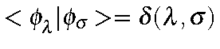
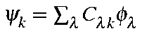
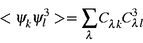
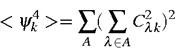
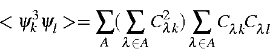
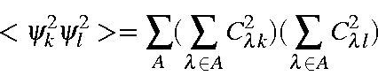

For a set of LMOs,
Si<yi4>
SiSj<yi2><yi2>
SiSj<i<yi2><yi2>
The operation to localize M.O. consists of a series of binary unitary
transforms of the type:

=a\vert\psi_k> +b\vert\psi_l> \end{displaymath}">
=-b\vert\psi_k> +a\vert\psi_l> \end{displaymath}">
The ratio a/b is given by

-<\psi_k^3\psi_l>)} {<\psi_k^4>+<\psi_l^4>-6<\psi_k^2\psi_l^2>}\right) \end{displaymath}">
=\delta(\lambda,\sigma)$">.From this it follows that, given

,
= \sum_{\lambda}C_{\lambda k}C_{\lambda l}^3 \end{displaymath}">In order to preserve rotational invariance, all contributions on each atom must be
added together. This gives:

= \sum_A(\sum_{\lambda\in A}C_{\lambda k}^2)^2 \end{displaymath}">
= \sum_A(\sum_{\lambda\in A}C_{\lambda k}^2) \sum_{\lambda\in A}C_{\lambda k}C_{\lambda l}\end{displaymath}">
= \sum_A(\sum_{\lambda\in A}C_{\lambda k}^2)(\sum_{\lambda\in A}C_{\lambda l}^2) \end{displaymath}">